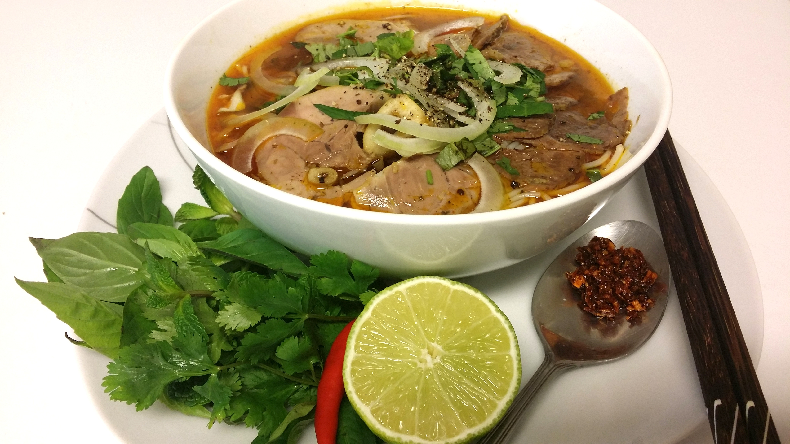
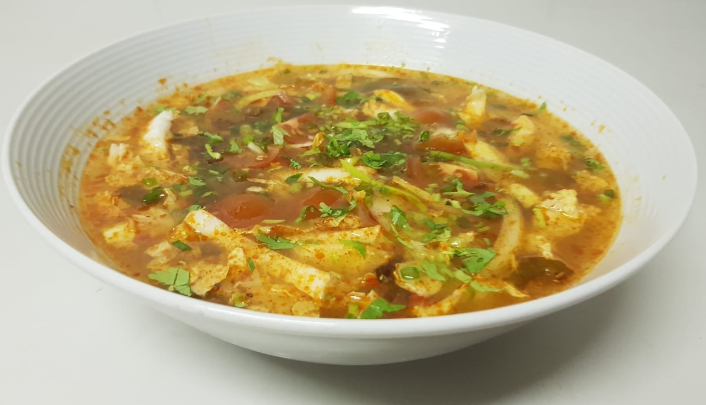
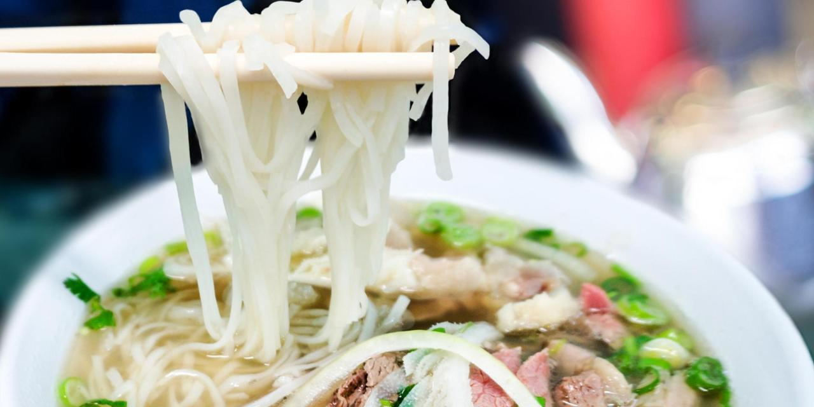
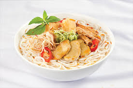

Phở bò.................................................23.-
Soupe aux nouilles traditionelles au boeuf avec pousses de soja et herbes asiatiques - tranches de boeuf cru (A.bò tái)
Bún Bò Huế.........................................23.-
Soupe aux nouilles de riz au boeuf et porc à la citronnelle, saté maison, salades et herbes asiatiques, tranches de boeuf cru(A.bò tái)
Soupe chua cay / Soupe aigre-piquante..................................23.-
Viande à Choix : poulet, bœuf, crevettes ou tofu
Vermicelles de riz, herbes asiatiques, légumes de saisons.
Phở Chay / Soupe Phở végétarienne......................................23.-
Soupe aux nouilles traditionnelles avec boulettes végétariennes, pousses de soja et herbe asiatique.
Bún Bò Huế Chay/"Bun bo Hue" végétarienne....................23.-
Soupe aux nouilles de riz avec du tofu, satay maison, salade et herbes asiatiques.